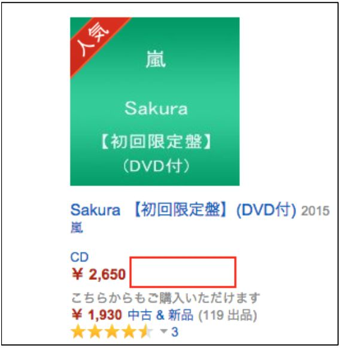

| トップ４%に入るための最強の稼ぎ方 | |
| 斉藤啓太 | |
| Hitotsuku Publication (2017) | |
斉藤啓太
初めまして。
斉藤啓太と申します。
私のことを知らない人がほとんどだと思われますので、まずは自己紹介をさせていただきます。
私は現在、物販関連会社３つの代表をしています。
メインは、「電脳せどり」というビジネスを行っています。
初めてこの言葉を聞いた人には、「電脳？せどり？何だそれ？？」という感じかもしれませんね。
電脳とは、「電子頭脳」の略でいわゆる「コンピューター」のことです。
せどりとは、簡単に言いますと、商品を安く仕入れて、高く転売をするというビジネスです。
要するに電脳せどりとは、コンピューターを使って物品を転売する、ということですね。
電脳せどりは、個人でもパソコン１つあれば仕入れから販売までできてしまうので、場所に縛られずどこででもやることができます。
副業でやるにも都合が良く、例えばサラリーマンでも空いた時間に気軽にでき、知識があまりない初心者でも短期間で利益を出せて、リスクも大きくない、そんなビジネスだと私は思っています。
私はこの仕事をする以前は、アパレル業界で１０年間サラリーマンとして勤務をしていました。
しかし３２歳のとき、私は突然ガンの宣告を受けました。
「いつ自分は死ぬか分からない・・・」と、そのときは本当に死を覚悟していました。
そんな暗い気持ちになって、ふと今までの自分の人生を振り返ってみると、「あれをやっておけばよかったなあ。」「これをもっとやっておけばよかった。」と悔いが残ることが多くあることに気が付きました。
今までのことやこれからのこと、そうしていろいろ考えたなかで、
「私は後悔をしない生き方をするんだ！」
と、心に決め、私は起業をしました。
もともと起業をしたい！という思いが心のどこかにはあったのですが、結局それまでの人生では行動に移すことができずにいたのです。
そして「毎日毎日を大切にして、本当にやりたいことに向かって生きなきゃ！」と、とても強く思いました。
私は、資金５万円から副業として電脳せどりを始めて、半年ほどで月収１００万円を達成することができました。
そして今や月商１億円、年商も１０億円近くまで出せるくらいまできています！
結果、好きなときに旅行に行けたりだとか、時間的にも経済的にもすごく余裕ができるようになりました。
今回は、私が成功した電脳せどりのなかでも、少ない資金からでも爆発的な売上を上げることができる「予約転売」というもののノウハウをお伝えします。
この方法を使えば、経験がない、資金もあまりないといった初心者の人でも、スタートダッシュをかけられてかつ短期間で稼げるようになります。
そうして稼いだ資金をもとに、あなたも次へ次へとつなげて行き、予約転売のノウハウをどんどん実践していってください！
そうすることで、私がわずか５万円の資金から半年ほどで月収１００万円を達成したように、あなたも短期間で驚くような成果を上げられるようになるでしょう。
私は、自分自身の体験からも、
「行動さえすれば、それに見合ったものが必ず返ってくる！」
と強く言えます。
この書籍を通して、そういったことが少しでもお分かりいただけたなら幸いです。
あなたも電脳せどりを駆使して、後悔することのない人生をぜひお送りください！
本題の話をする前に、まずどうしてもあなたに考えていただきたいことがあります。
これは、電脳せどりだけに限らず、何かビジネスをすることに対しての向き合い方、ひいてはあなた自身の生き方にもつながっていくことだと思います。
それは何かと言いますと、今あなたが「本業」としてやっている仕事、これ１本だけでこれから先も大丈夫か？ということです。
もし会社員の人なら、今会社でしている業務やお給料をちょっと考えてみてください。
いかがでしょうか？
「正直１本はキツいよなあ。」「いや、今の仕事で十分生活ができているから、何か他のこともやる必要なんてない。」などと、人によっていろいろ感情が出てくるものでしょう。
もちろん今の自分の仕事で得られるお給料だけで満足に生活しているのであれば、それは大いに結構なことでしょう。
でも今の時代、例えば会社員の人なら、それ１本だけではなく複業もやっていった方が絶対に良い、と私は考えています。
ここで「副業」ではなく、私はあえて「複業」という表現を使いました。
一般的に副業は、例えば自分の収入を１０としたとき、本業は８、本業以外は２のように「本業の収入」より少ないものを「副業の収入」と考えられています。
しかしこの「複業」とは、本業と同じくらいの収入を得られるビジネスをすることを言うのです。
簡単に言えば、本業が５で本業以外も５のように、同じくらいの割合で収入全体を占められる「収入の柱」を本業の他にも持つ、というようなビジネスのことです。
複業をすることによって、全体の収入を２０にも３０にも大きくできますし、仮に本業の収入がなくなったとしても、問題なく生活できるという環境を作ることだってできます。
ひと昔前までは、「会社員は終身雇用で安定している」「会社員のお給料だけでも家族は十分生活できる」なんて言われていたこともあります。
しかし今は、こんな「安定」なんて呼べるようなものは、ほぼないに等しいんです・・・。
例えば、景気の傾きや会社の雇用事情、人間関係、ときには大震災などの大きな自然災害に左右されて、仕事がなくなる、無職になってしまうなんて全くあり得ない話ではありません。
また勤続年数を重ねてもあまり昇給しない、収入が少ないから貯金もあまりできないなんてことを多くの人が悩んでいます。
これは会社員１本でも大丈夫だから！というマインドでは絶対に解決することではありませんよね？
つまりは、会社員の収入という不安定な柱１本だけで生活している人が現在本当に多くいるのです。
もちろん先のことは人間誰にだって分からないですし、できることの限界なんてものもあるでしょう。
ですが、起こりそうなリスクに備えてあらかじめ身を守れるようにすることは、誰にでもできます。
そのためにも会社員１本だけではなく複業をする、つまり本業以外にも同じくらいの収入を得られる柱を複数持っておくというのは、非常に重要なのです。
複業をして収入を安定させることで自分の生活を守っていくというのは、実はすでに海外では当たり前のことで、日本でも一般的な考え方に近づいてきています。
ですからまずはあなたに、「今の時代は複業も必要なのかな・・・？」と考えてもらいたかったのです。
とは言っても、何も大それたビジネスをやりなさいということではありません。
楽しく、気軽に、短期間で儲けられて、リスクも大きくないようなビジネスをやれば良いのです。
そしてそれを叶えられるのが予約転売である、と私は信じています。
だから予約転売は、「不安定な自分の生活を変えてくれる収入の柱になるんだ！」とまずあなたのなかに意識として持っておいてほしいのです。
複業は何も悪いことではなく、これからの時代で非常に大切なことになるのですからね。
さて、電脳せどりの予約転売という手法をお話しするまえに、まずはあなたにひとつ質問をします。
あなたは普段の生活で、何か欲しいものがあったときはどのようにして手に入れていますか？
食べ物が欲しければ近くのスーパーやコンビニへ行ったり、本が欲しければ本屋さんへ探しに行ったり、服や家電が欲しければ専門店へ買いに行ったり・・・そういうものですよね。
自分でも行けるような近い場所に、その欲しいものが売っているお店があればそれで満足はできるでしょう。
しかしインターネットが発達している現在、ネットショッピングをしているという人は大勢いるのではないでしょうか？
実際、ネットショッピングをする人は、年々増えてきています。
例えば、Ａｍａｚｏｎや楽天市場、Ｙａｈｏｏ！ショッピングなどのショッピングサイトをあなたも目にしたり、あるいは利用したことがあったりするのではないでしょうか？
ネットショッピングは、一度にたくさんの商品を見られて、クリックするだけで家に居ながら欲しいものを買えるということが叶いますよね。
さらに近所のお店には在庫がないものやレアな商品、はたまた海外のものだって買うことができますね。
また、買うだけではなくて何かものを売るということもできてしまいます。
「ええ、そんなの当たり前でしょ？」なんて思うかもしれません。
なぜこんな話をしたのかと言いますと、ズバリ予約転売とは、このネットショッピング（主にＡｍａｚｏｎ）を活用して行うビジネスなのです。
もっと具体的に言ってしまえば、発売日前のこれから世に出る商品を転売するということをしていく、それが予約転売です。
プレミアになりそうな限定性のある商品を、自分で仕入れて、その商品を欲しい人に売る、そういうことをしていくんですね。
どんなものにでも言えることですが、発売日前からこれから発売日に向かっていくという商品は、大変需要が高く、欲しい人がとても多いです。
ここに向けて販売していく手法なんだな、というイメージを持っていただければまずは良いでしょう。
このようにネットショッピングで予約転売をやっていくのですが、
「始めるのにはいろいろと準備するもの、必要なものがあるんじゃないの？」
なんて思う人もいるかもしれません。
でもそんなことはないのです！
後ほど説明はしていきますが、もちろん具体的なノウハウみたいなものは必要になってくる場面もあります。
しかし、それらはやっていくなかで自然と身に付くことでもあるので、最初から変に身を構える必要はありません。
はじめにも言いましたが、パソコン１つあれば初心者であっても誰だってできます。
場所にもとらわれることなく、自宅でも、カフェでも、旅行先でも、パソコンさえあればお仕事ができてしまうのです。
そうは言っても、「発売日前の商品を自分で売るなんて馴染みがないから、初心者にはやっぱり分からない。」という人が多いと思います。
でも考えてみればそういった予約販売は、周りでもよく行われています。
ｉＰｈｏｎｅの新型とか新しいゲームとかニュースになるものもありますよね。
実際、先ほど予約転売に利用すると言ったＡｍａｚｏｎのようなネットショッピングサイトでも、発売日前に予約販売するというのは行われているのです。
でもそういった商品は、だいたい発売日を待たずに完売してしまいます。
いろいろなネットショッピングサイトがあるなかで、だいたいＡｍａｚｏｎが一番最初に完売するんですね。
だからあまり耳にする機会がないということになっているのかもしれません。
ここでお伝えしたい予約転売は、そうしてＡｍａｚｏｎが予約を打ち切り、在庫がなくなった商品を自分が出品者になって商品販売をすればいいのです。
後ほどになりますが、お伝えしていく予約転売のやり方を知っていけば、誰にとっても難しくないことなんだということが、きっとお分かりいただけるでしょう。
ちなみにここでお金の話もしておきますと、Ａｍａｚｏｎの在庫がなくなった商品は、その時点で通常の価格より高い価格になるんですね。
例えば、定価３，０００円でＡｍａｚｏｎが販売していたものが、在庫切れになったら５，０００円とか６，０００円とかの高い価格になって販売することができるのです。
実例も、第２章で後ほどご紹介しますが、そんな価格でもものすごく売れちゃいます。
だから初心者でもひとつの商品だけで、１ヶ月で数百万円の売上を上げた事例も実際にはたくさんあるということを認識いただけたらと思います。
だから、経験がないからとか知識がないからなんて言って諦めないでくださいね。
ここまでで、「ふーん、ネットでものを売るんだな。」と、いった予約転売のイメージがなんとなく浮かんできたかなと思います。
では、ここからは予約転売のメリットをいくつかお話しします。
どんなことでもメリットがないとやろうとは思わないものですよね。
はっきり言ってしまいますが、予約転売のまず大きなメリットのひとつ、それは
「無在庫でもできる！」
というところです。
これは文字通り、在庫がなくてもできるということですね（笑）
普通、何かを販売するとなると、商品を仕入れて販売するために「在庫を抱える」というリスクを負うことになります。
例えば、本を売ろうとしたら、本を仕入れて、その本を売れるまで持っておかなければいけませんよね。
本が売れていけばそれに越したことはないですが、仕入れたもの全て完売しましたなんていうのはそうないことです。
うまく売ることができなければ、それは不良在庫というふうになってしまいます。
何がどのくらい売れるのか、どのくらいの量を仕入れたらいいのか、どう商品を販売していけばいいのか、これから始めようとしている人にとって、これらの判断は非常に難しいものです。
しかし予約販売では、普通にものを売るときとは反対で、売れてから商品を仕入れれば良いので、そのような心配は無用です！
要は、「失敗するリスクがない」ということですね。
「え！？そんなことができるの？」なんて感じられるかもしれませんが、大丈夫です！
できます！
具体的に言えば、発売日前にＡｍａｚｏｎで予約販売して売れたものを、Ａｍａｚｏｎ以外のところから仕入れて、発売日当日にそれが自分の手元に来たら発送する、としていくので、そのときのことだけを考えて行えば良いのです。
例えば、Ａｍａｚｏｎで在庫がなくなった商品を自分が予約販売して、３個売れた、となったら、Ａｍａｚｏｎ以外のお店からその商品を３個仕入れてそれを配送するとやっていく感じですね。
これはつまりは、先ほどありました「商品を先に売れてから仕入れる」ということです。
この考えは、第３章の「予約転売の流れ」のなかでもお伝えすることになるので、頭の片隅に覚えておいてください。
売れると分かっていてから仕入れるので、ここからも失敗するリスクがないということはお分かりいただけるでしょう。
やることに対するリスクがそんなにないことは分かっても、予約転売をスタートするための資金は多く用意したり、リスクが少ない分リターンも少ないのではないか、なんてことはどうしても考えてしまうものですよね。
それは当然のことで、決して不安に思うことではありません。
実際多くの人は、新しい事業であったり、副業を始めようとするなら、「最初に用意しなければならない資金は多くなくてはいけない」「ローリスクハイリターンなんてありえない」というイメージを抱くものです。
例えば、株や不動産、飲食店なんかをやろうなんて思ったら、まずスタートに数百万円ものお金が必要だったりしますからね。
また、それらのような事業は、その分野の知識やテクニックなんかがないと失敗してしまう、初めはうまく行っていても、どんどん売上が出なくなってくるといったリスクも付いてきてしまいますし・・・。
しかし、はじめにもお話ししたように、私は資金５万円から予約転売をスタートし、月収１００万円稼ぐようになれていますから。
これは、何か事業をやるとなったときに用意する資金としてはとても少ない金額だと思いますし、かなりのハイリターンですよね？
これには、先にお話ししたような、発売日前の商品を高い価格で売るというところからなのはもちろんありますが、商品は発売日後でも売れて、長い期間で稼ぐことができるという要因もあるのです。
どんなものに対してでもそうでしょうが、需要と言うのは、宣伝や広告の効果もあって発売日に向けてグーッと高くなっていくものです。
そして発売されるとだんだん下がってはいきますが、全くの０にはなりません。
だから、出品したらもうそのときで終わり、ということにはならずに、その後からでも利益を得ることができるのです。
要は予約転売には、
「少ない資金でもしっかり稼げる仕組みがある」
ということです。
またどんなものを売るかというような、売りたい商品なんかを自分で選ぶことができ、価格や個数なども自分である程度設定ができてしまいます。
なので、うまく行けば１つの商品で１００個や２００個、ときには１，０００個以上売れることもありますので、予約転売にはすさまじい爆発力があります！
ここまでの話の流れから、イメージが湧いていただけることと思われますが、電脳せどりのなかでも予約販売というビジネスは、何より「短期間で爆発的な利益を得られる」というところがやはり非常に大きいです。
例えばサラリーマンの人にとって、自分がした仕事がすぐに収入と直結して、目に見える形で自分のもとにくるというのは、あまり機会がないことだと思います。
会社で仕事をしていてもそうですが、普通何か物品を転売したり、先ほど例に挙げた株や不動産、飲食店などのような、新しくビジネスを始めようとしたら、結果が出るまでにはどうしても長期的な時間を要することを見込まなければなりません。
そのように見込んでやっていても、現実思っていたほどの収入を得られなかった、最悪結局失敗して赤字でした・・・なんてことだって多くあります。
時間がかかるのに成功できない、なんてことを誰もやりたくはないですよね？
もちろんうまくいくこともありますが、そんな不安を抱えながらビジネスをしていてもあなた自身何も楽しいことなんてないでしょう。
でも予約転売においては、そんな心配はまずありません。
そのときに売れると分かっているもの、しかもプレミア商品を世に出るまえから販売をするので、必ず利益が出せます。
売れたらそれがすぐに自分の利益になるというところも分かりやすく、効率よく転売することができるようになれば、１ヶ月ほどの短期間でも、普通のサラリーマンのお給料を超える収入を生み出すことだってできるのです。
職場の同僚や友人より収入が多くなればやっぱり嬉しくないですか？
自分のやったことがすぐに実を結ぶんだ！と知ると、誰だってやっていて楽しくなるでしょうし、それでお金を稼げるのであればなおさらやらない手はないと思います。
そんなビジネスがこの予約転売なのです！
短期間でも実際どういったものを売って、どれくらい利益が出ているのか、具体的な実績を次の第２章ではお伝えします。
この第１章でお話しした予約転売を、よりリアルに考えていただきたく思います。
第１章では予約転売はすぐに始められ、リスクなくわずかな期間で大きな利益が出せるという魅力をまずはお伝えしました。
そこで、あなたのなかにはこんな疑問が生まれてきているのではないでしょうか？
それは、
「そんな予約転売では実際にはいったいどんな商品を販売しているの？」
という疑問です。
そうですよね。
ここまで予約転売とは？という外側のことをお話ししてきて、肝心の商品の中身のことに関しては何も触れてこなかったので当然のことだと思います・・・。
ここまででもうお分かりいただけていると思いますが、予約転売は端的に言いますと、
「プレミア商品またはプレミアになりそうな商品を入手して、それ以上の価格（プレミア価格）をつけて販売する」
ということですね。
ここでプレミア商品という表現をしていますが、それを聞いてもあなたは「プレミア商品？プレミアになりそうな商品？そんなものどうやったら分かるの？」と思うでしょう。
そんなこといきなり言われてもイメージなんて湧かないですよね。
でもプレミア商品は実は、意外とあなたの身近なものであったりするんです。
例えば、人気アーティストの限定版やジャニーズグループの限定版、人気ゲームの限定版、限定グッズなどのあなたが知っているような商品です。
どういった商品が転売されているのか、ここから私の経験と具体的な実例を共にご紹介していきますね。
まずはＣＤです。
ＣＤは、よく予約転売に使われるベタな商品です。
ＣＤは手に入れやすさとプレミア価格での販売のしやすさというところにその要因があるでしょう。
自分がファンのアーティストが発売するＣＤを早く手に入れたいという人は多いので、販売する前から利益も見込まれるのです。
それに今や国内で販売されているアーティストＣＤは、非常にたくさんありますからね。
私の経験からですが、アーティストのＣＤシングルやアルバムといったものを販売したときの紹介です。
まずはジャニーズのアーティストのＮＥＷＳ、関ジャニ∞
のＣＤです。
２０１４年６月１１日発売の「ＮＥＷＳ ＯＮＥ‐
ｆｏｒ ｔｈｅ ｗｉｎ‐
初回Ａ」は、２０１４年ブラジルＷ杯のテーマソングであったため、売れ行きも良く、７５枚売れました。
１枚当たり１，９００円ほどの利益ですので、
９００円×７５枚＝利益１４２，５００円
となりました。
２０１４年１２月４日発売の「関ジャニ∞
がむしゃら行進曲」は、ドラマ主題歌にも使用されたため、数分おきに売れていき、２日ほどで８６枚売れました。
１枚当たり１，５００円ほどの利益ですので、
５００円×８６枚＝利益１２９，０００円
となりました。
関ジャニ∞
も、昔はそこまで爆発的に売れなかったのですが、最近は人気も出てきて売れ行きも絶好調です。
ジャニーズ以外のアーティストでは、２０１５年１月１４日発売の「ＳＥＫＡＩ ＮＯ ＯＷＡＲＩのＣＤアルバムの初回限定版」は、定価４，８６０円に対して、販売直後から７，３００円のプレミア価格になり、数分、というか数秒おきにどんどん売れていき、結果としては販売から２日程度で２２１枚売れました。
１枚当たり１，０００円ほどの利益ですので、
１，０００円×２２１枚＝利益２２１，０００円
となりました。
ファン待望のアルバムのリリースだったので、待ちわびていた人も多かったのかすごい勢いで売れていったのですね。
ちなみにＣＤで言いますと、Ｋ‐
ＰＯＰは人気が高く、韓国の女性アイドルユニットＫＡＲＡの「ＢＥＳＴ ＧＩＲＬＳ 初回限定版」は４８枚売れました。
１枚当たり２，１００円ほどの利益ですので、
１００円×４８枚＝利益１００，８００円
Ｋ‐
ＰＯＰアーティストは、東方神起やＢＩＧＢＡＮＧなどまだまだプレミアへの期待が高いアーティストはたくさんいますので、ＣＤを予約転売するときは要チェックになるでしょう。
次にＤＶＤです。
ＤＶＤもＣＤと同じく、手に入れやすさ、販売のしやすさがあります。
またＤＶＤには特典が付くものも多かったりするので、こちらも売る前から利益が見込まれます。
ここも私の経験からですが、アーティストのライブＤＶＤを販売したときのものを紹介します。
まずジャニーズのアーティストでは嵐、関ジャニ∞
のコンサートＤＶＤです。
２０１４年１２月２４日発売の「関ジャニ∞
十祭 初回プレス版」は、５日ほどで４１３枚売れました。
１枚当たり１，０００円ほどの利益ですので、
１，０００円×４１３枚＝利益４１３，０００円
となり、先ほどのシングルＣＤとの２商品だけで、ひと月５０万円以上の利益を得ることができました。
２０１４年５月２１日発売の「ＡＲＡＳＨＩ アラフェス'１３ ＮＡＴＩＯＮＡＬ ＳＴＡＤＩＵＭ ２０１３【ＤＶＤ】初回プレス分」は、瞬く間に売れて行き、１５２枚売れました。
１枚当たり１，２５０円ほどの利益ですので、
１，２５０円×１５２枚＝利益１９０，０００円
となりました。
嵐は、プレミア価格になるメディアの常連で、発売される限定版の商品は、ほぼ確実にプレミア価格になります。
つまりは、買えば儲かる、という状況ですね（笑）
アーティストライブ以外にも映画のＤＶＤなんかも販売しました。
２０１４年に大ヒットした「アナと雪の女王」のＤＶＤは、１８０枚も売れ、１枚当たり２，４００円ほどの利益でしたので、
４００円×１８０枚＝利益４３２，０００円
になりました。
ヒットした映画は、ＤＶＤでも欲しい人はたくさんいるので、こちらもかなり稼げますね。
ＣＤ、ＤＶＤは、このように１週間程度の短期間でも爆発的に稼ぐことができます。
これってかなりすごいことだと思いませんか？
このように示してきた通り、ＣＤやＤＶＤが予約転売の商品としては代表的で、しかも大きな利益を出すことができています。
その効果もあってで、売れるＣＤやＤＶＤのアーティストや作品に関連したもの、限定グッズみたいな関連商品も売れることが多いんですね。
先ほど紹介した嵐で言えば、ＣＤ、ＤＶＤが売れれば、コンサートの写真集なんかも売れています。
これも私の経験からですが、嵐の２０１４年コンサート写真集は、さすがは嵐！というくらい爆発的に売れ、なんと５０７枚も売れました。
１枚当たり２，２００円ほどの利益ですので、
２，２００円×５０７枚＝利益１，１１５，４００円
となり、この１商品で驚異の利益１００万円越えをしました。
またこちらも先ほど紹介しました「アナと雪の女王」は、アナ雪仕様の製品やキャラクターグッズなどのアナ雪関連商品が多数プレミア価格になり、ＤＶＤと共にガンガン売れていきました。
このように人気のあるアーティストや作品のキャラクター関連の商品は予約転売しやすく、儲けやすいのです。
もうひとつ転売しやすいものの紹介をさせていただきますと、それは新作ゲームです！
人気のゲームソフトは、毎回品薄になり、プレミア価格になることが多いのです。
例えば、私が販売したもので言えば、任天堂の３ＤＳのソフト「ゼルダの伝説 神々のトライフォース２」は１６１枚も売れ、
１枚当たり８５０円ほどの利益ですので、
８５０円×１６１枚＝利益１３６，８５０円
となりました。
人気のゲームソフトで言えば、モンスターハンターやドラゴンクエスト、スーパーマリオなどもプレミア常連ですので、予約転売をするときにはぜひ要チェックです！
まだまだ実例はたくさんありますが、実際に販売した商品から得られた利益からも、短期的で爆発的に稼げる予約転売のすごさがあなたにもお分かりいただけたのではないかなと思います。
次の第３章では、実際に予約転売を行っていく具体的な方法についてお話しします。
第１章と第２章で、さらにあなたも予約転売の世界を垣間見ることができたのではないかと思います。
ここからは、実際に予約転売をやっていく方法をお伝えします。
その方法なのですが、基本的には次の３ステップだけです。
それは、
１．Ａｍａｚｏｎ本体が予約終了している商品を見つける
２．Ａｍａｚｏｎで予約販売する
３．売れたら商品を仕入れる
です。
ここまでの予約転売のイメージから、あなたにも「うんうん、こう進めて行くのか。」と感じていただけると思います。
しかしこの流れでは、「販売してから仕入れるというのが怖い。」「他のショップも売り切れだったらどうしたらいいんだ？」ということを、思うかもしれませんね。
そういう人は、出品する前にあらかじめ主要なショップの在庫があるか確認してから仕入れたり、２と３の順序を逆にして、見つける→仕入れる→販売するというように取り組んでも良いです。
この流れで予約転売を行っていき、もし売れなかった分が出た場合でも、キャンセルをするか、商品が手元に届いたらＦＢＡ（説明は後ほどします）というものを利用して、そこに納品して売るなりすることができます。
では、それぞれの具体的な説明をしていきましょう。
さてスタートはここからです。
まずは、Ａｍａｚｏｎ本体が予約終了をしている商品を探しましょう。
予約転売できる商品を探してそれをうまく選択して行くというのは非常に大切ですからね。
予約転売できる商品は、第２章でも挙げたようなＣＤ、ＤＶＤやＧＡＭＥ、ＨＯＢＢＹ、おもちゃなどです。
ランキング上位のものを選ぶとプレミア商品になりやすいですが、探していくなかで見つけたもののランキングをその都度確認するとやって行くでも良いでしょう。
今回はＣＤを参考に話を進めていきます。
まずＡｍａｚｏｎのトップページにあるカテゴリーから〝ミュージック〟を選択します。
そうしたら検索窓に〝予約〟と入力し、検索ボタンをクリックしてください。
次に、検索結果の商品のなかの価格の右横に〝プライム〟と記載されていないものを探していきましょう。
次のように、この〝プライム〟と記載されているものは、実はＡｍａｚｏｎ本体が予約を受け付けているという商品です。
つまり〝プライム〟と記載されていないもの、次のようなものが、Ａｍａｚｏｎ本体が予約終了している商品ということですね。

こうした商品で、自分が売れそうだな、と思ったものを見つけていってください。
ひとつ見つけたら終わりではなく、いろいろなものを見て検討することをおすすめしますよ。
プレミア商品が見つかったら、実際に予約販売をしてみましょうか。
せっかく見つけた商品も放っておいては意味がないので、すぐに販売へと進めて行きましょう！
まずＡｍａｚｏｎのセラーセントラルの右下のサイトマップのなかにある〝在庫〟のカテゴリーのなかから〝商品登録〟をクリックしてください。
商品登録のページの検索窓に、予約販売したい商品の〝タイトル〟もしくは〝ＪＡＮ（ＥＡＮ）〟を入力し、〝検索〟をクリックします。
ちなみにこの〝ＪＡＮ（ＥＡＮ）〟コードとは、商品ページを下へスクロールしていきますと〝登録情報〟のなかに記載されていますので。
こんな感じですね。
そうしたら予約販売したい商品の〝出品する〟ボタンをクリックします。
そのあとのページでは、商品の〝コンディション〟は〝新品〟を選択して、〝販売価格〟（販売価格についてはのちほど説明します）を入力します。
下にスクロールしていくと、〝在庫〟と〝予約販売の販売開始日〟の入力箇所があるので、在庫数とその商品の情報を入力し、〝出荷方法〟は〝商品が売れた場合、自分で商品を発送する（出品者在庫）を選択します。
最後にさらに下にスクロールして、〝保存して終了〟をクリックすれば出品は完了です。
このあたりはほぼＡｍａｚｏｎのサイトに表示されているものに、パソコン入力をするという作業になりますね。
さあ、これが最後です。
自分が出品した商品が売れたら、次は商品を仕入れましょう。
まずＡｍａｚｏｎ以外のショップで、自分が転売したい商品が残っているお店はないか調べていきます。
例えば、ネットショッピングサイトで言えば、Ｙａｈｏｏ！ショッピングとか楽天市場とかタワーレコードオンラインとかＨＭＶなどのようなショップです。
では、Ａｍａｚｏｎ以外のお店で在庫があるかどうか調べていきましょうか。
このとき、仕入れるときの価格もできるだけ安く仕入れたいので、価格比較サイトを使って調べてみるのが良いです。
今回はリトルウェブという価格比較サイトを使っていきます。
まずはウェブ検索で〝リトルウェブ〟を検索して、ページに入ります。
リトルウェブの検索窓に〝ＪＡＮ（ＥＡＮ）〟を入力し〝同時検索〟をクリックします。
そうすると次のように在庫のあるお店が画面に表示されます。
この場合は、楽天市場で１６件、Ｙａｈｏｏ！ショッピングで２６件ヒットしましたね。
これは、このヒットしたところに商品の在庫がある、ということです。
まずは楽天市場をクリックしてみます。
そうすると楽天市場で在庫のあるお店が表示されます。
続いて、Ｙａｈｏｏ！ショッピングをクリックしてみます。
そうすると、Ｙａｈｏｏ！ショッピングで在庫のあるお店が表示されます。
このとき商品の在庫数や価格だけではなく、楽天市場やＹａｈｏｏ！ショッピングで、送料がどれくらいとかやポイントが付くかどうかなども見るようにすることをおすすめします。
一番安いお店で仕入れることはもちろんですが、送料が無料で、ポイントも多く付く方がまたお得、ですからね（笑）
こうして仕入れた商品は、先にもお話したように発売日前日か発売日に届きます。
ですので、あとは商品があなたの手元に届いたら、それを梱包し購入していただいたお客様に送る、とするだけです。
ちなみにですが、予約転売をやっていくなかで、もっとお金を稼ぎたい！という風に感じた人は、多めに仕入れをして、次でご説明をするＦＢＡに納品して、発売日後も爆発的に売るということも可能ですので。
以上、これが予約転売の流れです！
ここまでで予約転売の３つの大きな流れを説明してきましたが、説明のなかで先ほどから商品が売れなかった分やさらに稼ぎたいは、〝ＦＢＡ〟に納品して売る、とお話ししてきましたね。
おそらく多くの人が見たことも聞いたこともないであろうこの〝ＦＢＡ〟っていったい何なのでしょう？
ＦＢＡとは、「フルフィルメント ｂｙ Ａｍａｚｏｎ」という商品の受注管理、出荷作業、出荷後のカスタマーサービスなどの納品作業以降の業務を、全てＡｍａｚｏｎが行ってくれるサービスです。
これを利用すれば、私たちがすることは、商品を仕入れて発売日に商品が届いたら、それをまとめてＦＢＡ倉庫に商品を送り販売するという作業だけになります。
手数料はかかってしまいますが、商品を右から左へ横流しするような感覚だけでどんどん売ることが可能になります。
次にあるのは、Ａｍａｚｏｎに掲載されているＦＢＡの説明書きです。
不安な人は、Ａｍａｚｏｎの本サイトでぜひ一度ご確認ください。
このＦＢＡは、次の第４章でお伝えする「ショッピングカートの獲得」にも大きく関わってくるので、ぜひ覚えておいてくださいね。
次の第４章では、この第３章でお話しした予約転売の方法をより効率的にやっていけるノウハウをお伝えします。
予約転売をやっていくうえでまずやらなければならないこと、それは「自分の目的をちゃんと決める」ということです。
稼ごうという気持ちだけが先行して、ただ闇雲に行動していてはできるものもできなくなってしまいますから、まずは方向を定めていくことが大切です。
まずは、何かひとつに商品を絞ってみることを考えましょう。
第３章でお話しした「Ａｍａｚｏｎ本体が予約終了している商品を見つける」をやっていくにしても、いろいろな商品が販売されていますので、片っ端から手当たり次第に探して手を出してなんてやっていては、非常に時間もかかりますし、効率が悪いですよね。
ですので、要は販売するもののジャンルを絞るということを考えてからやって欲しいのです。
それは何でも良いです。
第２章やここまでのお話で例に挙げたようなＣＤ、ＤＶＤ、ゲームなんかでも良いですし、グッズやおもちゃなどでも良いです。
それぞれのなかにもいろいろ細かくあるものですので、ＣＤならジャニーズに絞るとかＤＶＤなら映画に絞るとかある程度決めてみると、またよりやりやすくなるでしょう。
とにかく最初は、何かひとつに決めてみてください。
そうすることで、その決めたものだけに集中して商品を選び、予約転売を効率よく進めることができるでしょう。
実際ひとつのものだけでも、数十万円の売上を出すということは可能です。
あるひとつのものに対しての知識や経験をまずはつけていくことで、自分のなかでベースを作って行きましょう。
そうすればジャンルを広げてガンガン商品を売っていくということも可能になってきますので。
そうして商品が決まったら、次は目標売上を決めましょう。
最初、慣れていくまでは現実的な数字にすると良いです。
そうすることで、どれだけ販売価格はどれくらいがいいのか、商品を確保すればいいのか、とこれから先にやっていくことにも繋がり、ひいては予約転売がしやすくなります。
例えば、１０万円の売上をまずは出そう！と決めたら、２，５００円のＣＤを４０枚売って、利益が１，０００円くらいならトータルで４０，０００円くらい稼げるな、と見通しが立ちやすくなりますね。
自分がこれからやるべきことが分かれば、それに向かって行動しやすくなりますし、それがうまくいけば、予約転売もどんどん楽しくなっていくことでしょう。
だからまずは自分が設定したジャンルや目標が叶えられるようにやっていき、慣れてきたら幅を拡大していくという風に進めてくださいね。
第３章でお話した流れで予約転売を行っていくなかで、正直一番私たちの手をわずらわせるのはどこだと思いますか？
それは、やっぱり「商品を仕入れる」というところです。
自分が転売する商品の在庫があるお店を、すぐにズバズバ見つけられればそれでいいのですが、探してもなかなか見つからないということは多くあります。
ですから、商品の仕入れに関しては、いろいろなやり方を持っておくととても効率的です。
そして、手段が多くあるというのは強みにもなります。
仕入れの多くは、先ほどからもお話ししてきたようにネットショッピングサイトから仕入れることになると思いますが、複数のサイトを行ったり来たりして、比較して見ていくには非常に手間がかかってしまいますよね？
そこでネットの拡張機能を用いれば、効率的に仕入れの作業を進めることができます。
この便利な拡張機能の設定方法をお教えします。
パソコンの初期設定では、〝インターネットエクスプローラー〟というブラウザが標準です。
予約転売を行ううえで、動作を軽くしたりするこの拡張機能を使うためにウェブブラウザは〝Ｇｏｏｇｌｅ Ｃｈｒｏｍｅ（グーグルクローム）〟を使います。
ウェブ検索で、〝Ｇｏｏｇｌｅ Ｃｈｒｏｍｅ〟と検索し、公式サイトで無料でダウンロードができますので、必ずインストールしてください。
では、拡張機能を設定していきましょう。
画面右上の赤枠内の〝！〟（Ｇｏｏｇｌｅ Ｃｈｒｏｍｅの設定）をクリックします。
そのなかの〝設定〟をクリックし、設定のなかの拡張機能をクリックします。
何も拡張機能を入れていない場合、拡張機能が表示されませんので〝ギャラリーから探しますか？〟をクリックします。
すでに何か拡張機能を入れている場合は、〝他の拡張機能を見る〟をクリックします。
そうすると、Ｃｈｒｏｍｅウェブストアにいきますので、検索窓に希望の拡張機能名を入力します。
今回は、「クローバーサーチＢ」という拡張機能を追加しますので、〝クローバーサーチＢ〟と入力し、Ｅｎｔｅｒキーを押します。
そしてクローバーサーチＢの拡張機能が出てきますので、右の青いボタンをクリックします。
最後に次のような画面が出てきますので、〝追加〟をクリックすれば完了です。
ついでにですが、拡張機能で探す方法だけでなく、ＪＡＮ（ＥＡＮ）コードで探す方法もあるので説明しておきますね。
Ａｍａｚｏｎの商品ページを下にスクロールすると登録情報が出てくるので、そのなかの〝ＥＡＮ〟で検索します。
この場合は「４９８８００２６７９３３１」です。
この拡張機能を使えば、自分が比較したいものを選んで仕入れを行うことができるので、作業効率が良くなります。
またネットだけではなく、近くにＣＤショップの実店舗があれば、そこで買って仕入れるというのもアリです！
ネット上では完売していても、実店舗を見てみるとまだ商品があるということは意外とあることなのです。
要は安く仕入れるができれば、ネットでなくてもどんどん活用していこうということなのですね（笑）
このようにいろいろな視点を持つということは、予約転売に限らず何かビジネスするうえでは大切です。
ちなみにこれは経験やノウハウにもなってきますが、私だったら一度に商品を１，０００個くらい仕入れたりすることもあります。
リスクを少なくしたいし、そんな大量に売らなくてもいい、という人は、１０個くらいにするとか数を調整することもできますので、ここまでやらなくても大丈夫です（笑）
予約転売に慣れてきたらぜひ自分に合った仕入れ方で進めていってもらいたいです。
商品を転売するときに、いくらでその商品を売るかは大事になってきますよね。
安すぎては利益が出ないですし、かといって高すぎてはお客様に商品を買ってもらえないですし・・・。
そもそも販売の知識がある程度なければ、適正な価格なんて分からないですよね。
ですが、予約転売の価格の設定には２つのパターンしかありませんのでご安心ください。
１つ目は、「ショッピングカートに表示されている値段に合わせて設定する」です。
ショッピングカートとは、商品ページのトップに商品の価格が表示され、お客さんがクリックすると商品を自分から買ってもらえる状態になることを言います。
下の赤枠のような表示ですね。
表示の価格で自分は売ることができるという権利みたいなものです。
価格を設定するときに、ショッピングカートというものが非常に重要になってきます。
もしショッピングカートを獲得できれば、より高値で、よりたくさん商品を販売することができますが、ショッピングカートを獲得できない場合は、その商品の最安値と同じ価格で販売しないといけなくなります。
最終的なことを言ってしまえば、ショッピングカートを持っているのと持っていないのとでは、販売個数や利益が約１０倍も変わってしまうのです。
しかしこのショッピングカートは、みんながみんな獲得できるわけではなく、獲得するには、次にお伝えする「３つの条件」を満たさなければなりません。
ちなみに、ある商品のショッピングカートの権利を自分だけが持っている場合は、自分だけで商品販売を独占できますが、ショッピングカート取得者が多数いる場合は、その商品の価格が表示される権利が順番にショッピングカートを持っている人へ回っていくという感じになります。
そういった状況のときの価格は、ショッピングカート取得者のなかの最安値に設定するのがとより売りやすくなりますので。
これは値段の優位性があって、ショッピングカートを取得している人のなかでも安く出品しているというのが、買う人の目に留まりやすいところに表示されるためです。
そして２つ目は、説明のなかでも出てしまいましたが、「その商品の最安値と同じ値段にする」です。
これは、ショッピングカートを持っていない場合にはこうするということです。
例えば、この場合ですと最安値は、１，９３４円ですね。
最安値といっても、もともとの定価よりも高いプレミア価格ですので、売れたら利益は出ます。
利益だけを意識して高い値段を設定すると、どんな商品でも売れなくなりますよ。
ここまでのことを念頭において考えると、あなたもショッピングカートはやはり持ちたいですよね？
商品を販売するうえで、ショッピングカートを持っているということは、先ほどお話ししたように、値段を最安値に設定しなくてもどんどん売ることができるというメリットがあります。
そしてそんなショッピングカートを獲得するには３つの条件がある、ということも言いました。
ここではその３つの条件についてお伝えしますね。
ショッピングカートを獲得するための条件の１つ目は、「出品形態が〝大口出品〟であるかどうか」です。
まずＡｍａｚｏｎのマーケットには、２種類の出品形態があります。
それは、〝小口出品〟と〝大口出品〟です。
小口出品は月額無料ですが、１商品売れるたびに、１００円の基本成約料がかかります。
大口出品は月額４９００円かかりますが、基本成約料はかかりません。
月額料金はかかりますが、その他にもいろいろメリットがあるので、これから稼いでいこうと考えている人は、大口出品を選択した方が良いでしょう。
２つ目の条件は、「パフォーマンスの指標（評価）が悪くないか」です。
Ａｍａｚｏｎで販売していると、購入していただいた人から評価をいただくことになるのですが、悪い評価をあまりもらわないようにするようにしよう、ということです。
と、言ってもそこまで怖がる必要はありません。
普通に販売していれば、悪い評価をいただくなんてことはほとんどありません。
もちろん評価は良いことに越したことはないですが、８０％
くらいでも獲得できているので、８０％
以上を目標に行えば良いでしょう。
３つ目の条件は、「Ａｍａｚｏｎ．ｃｏ．ｊｐでの取引数があるか」です。
これはつまり、Ａｍａｚｏｎでの販売数があるかということです。
そのなかでも、第３章でお話ししたＦＢＡでの販売数のことを言います。
予約販売する商品が、ＣＤならＣＤのＦＢＡ、ＤＶＤならＤＶＤのＦＢＡでの販売数です。
この獲得したいジャンルの販売数をしっかり意識して積み上げていくことで、Ａｍａｚｏｎから信頼され、ショッピングカートを獲得できるようになります。
と、言ってもこちらも莫大な取引数は必要ありません。
私のコンサル生である、初心者のような人でもショッピングカートを獲得することができましたのでご安心ください。
以上３つが条件です！
ちなみにショッピングカートの有無は、出品中の商品のページで随時確認することができます。
難しいと言うほどではない条件ですが、かと言ってもすぐにショッピングカートを獲得できるというわけでも正直ありません。
すぐにショッピングカートを獲得できなくても、出品形態を大口出品にして、Ａｍａｚｏｎで販売を繰り返ししていれば誰でもショッピングカートは獲得できますので、丁寧に予約販売を繰り返して行きましょう。
そうは言っても、少しでも早くショッピングカートを獲得したい！なんて人もいると思います。
もちろんそのような人におすすめの方法もあるので大丈夫です。
実は上記の条件に満たなくても、ＦＢＡで商品を意識して販売していれば、すぐに誰でもショッピングカートを獲得することができてしまいますので（笑）
以上が予約転売を行ううえでのより具体的な実践テクニックです。
この第４章でお話ししたコンテンツを駆使して、あなたにも楽しく効率的な予約転売ビジネスをぜひ行っていただきたいです。
最後までお読みいただき、本当にありがとうございました。
ここであなたにお伝えした予約転売のノウハウは、電脳せどりのなかのほんの一部です。
本書を読んで、「もっと詳しく知りたい！」「もっと稼ぎたい！」と思われましたら、私のメルマガのほうでも情報を発信しておりますので、ご登録よろしくお願いいたします。
また、質問や悩みがあって聞いて欲しいと言う方は、ぜひ私にメールしてください。
あなたがしっかり稼いで行けるように、全力でサポートするので大歓迎です。
予約転売ビジネスで人生を変えて行けるように、心から応援しています。
斉藤啓太